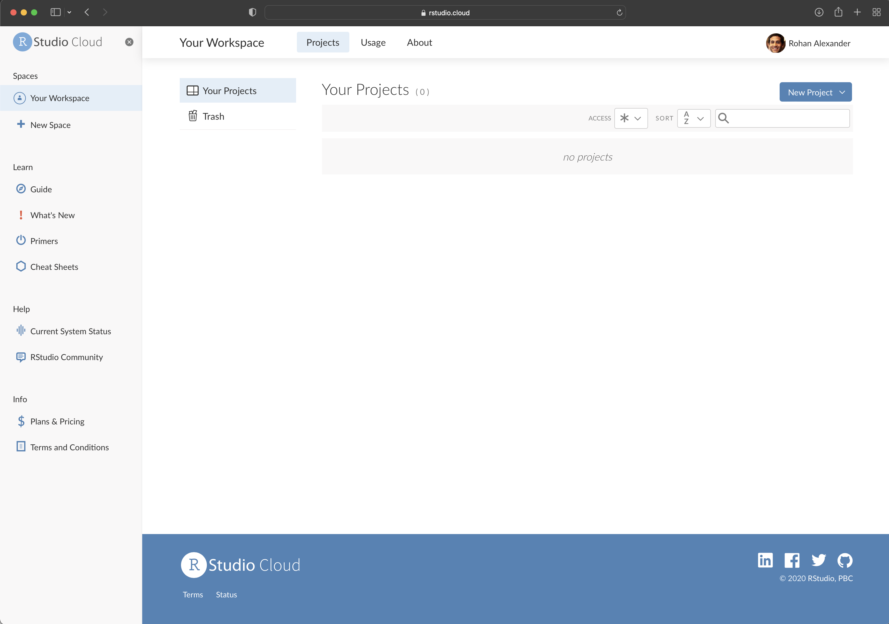
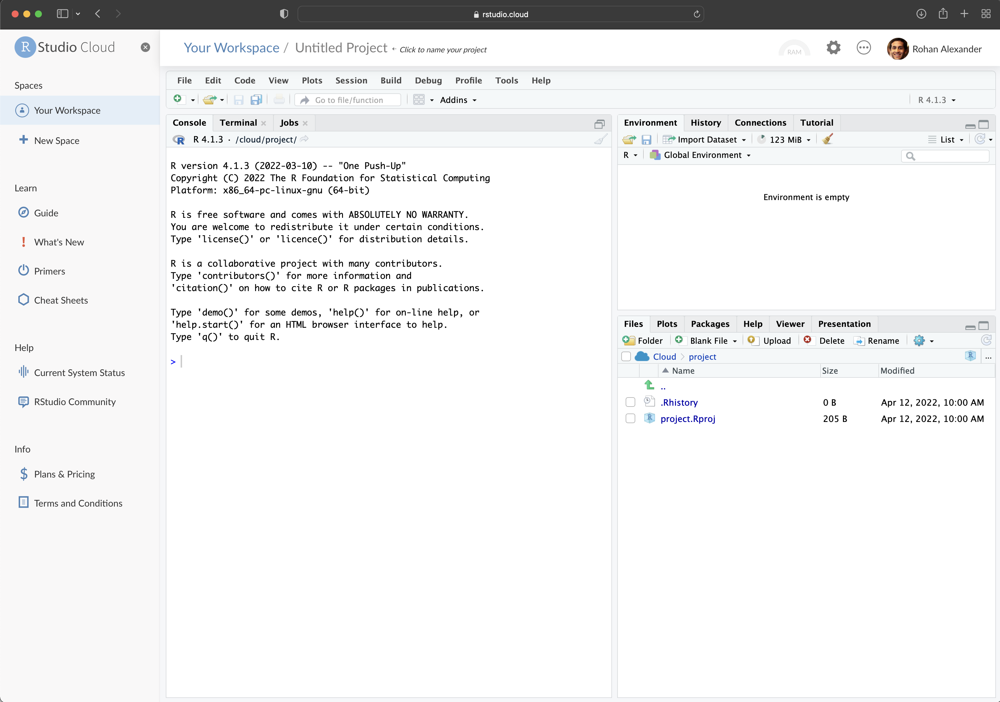
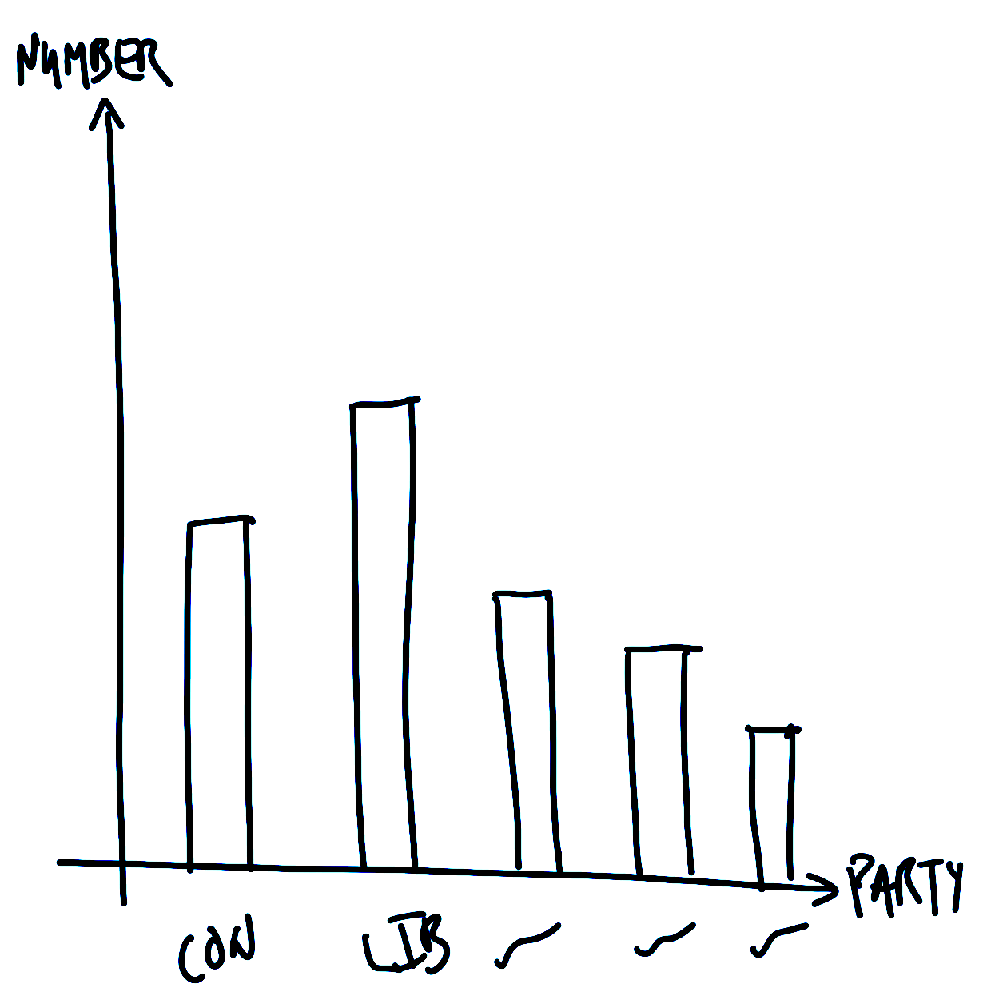
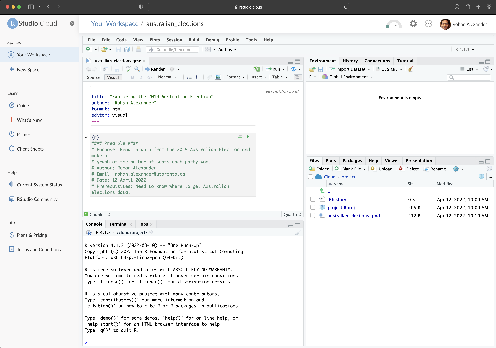
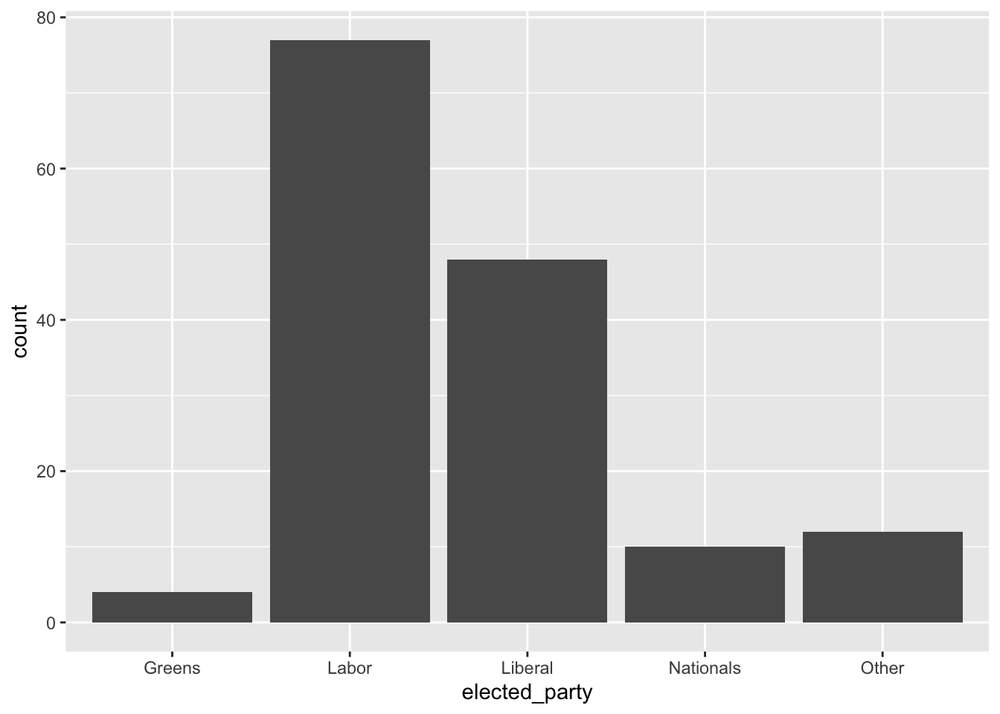
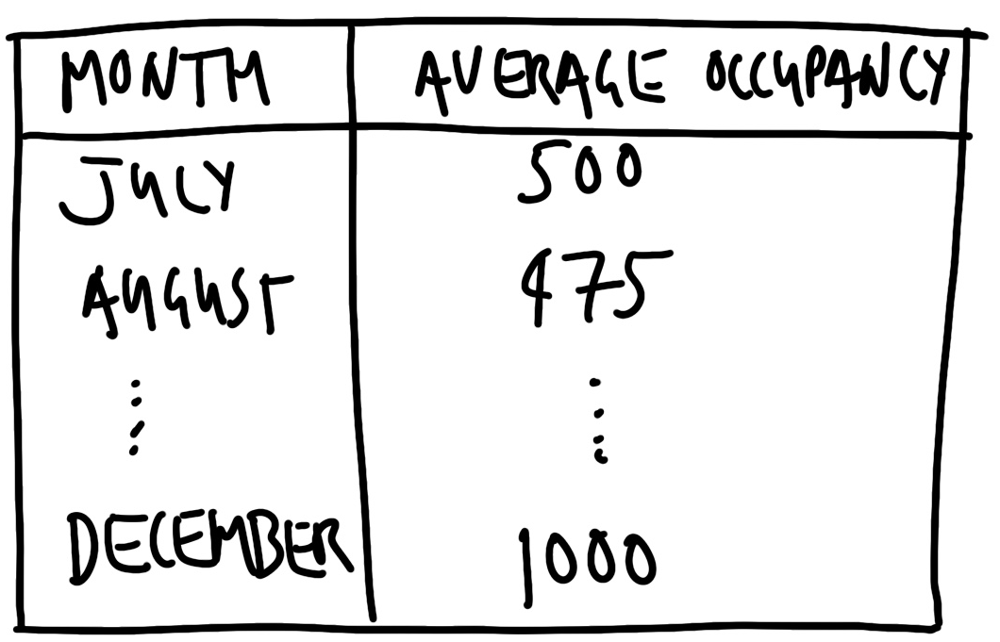
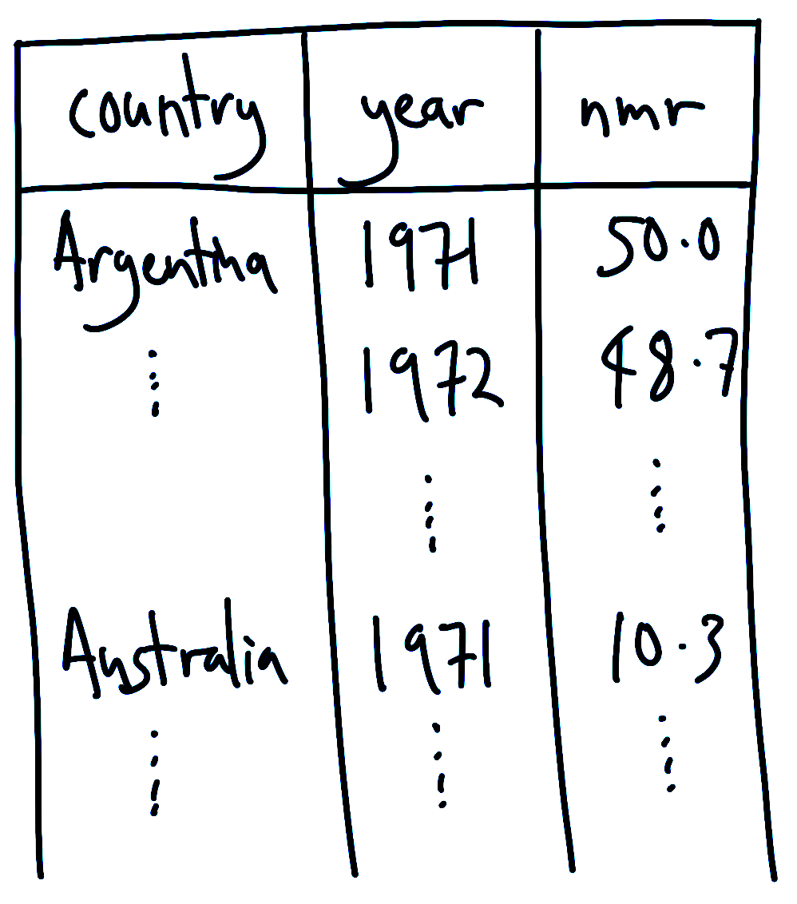

#### Preamble ####
# Purpose: Read in data from the 2022 Australian Election and make a
# graph of the number of seats each party won.
# Author: Rohan Alexander
# Email: rohan.alexander@utoronto.ca
# Date: 1 July 2022
# Prerequisites: Need to know where to get Australian elections data.2 Drinking from a fire hose
Required material
- Read Data science as an atomic habit, (Barrett 2021)
- Read This is how AI bias really happens—and why it’s so hard to fix, (Hao 2019)
- Read The mundanity of excellence: An ethnographic report on stratification and Olympic swimmers, (Chambliss 1989)
Key concepts and skills
- The statistical programming language R enables us to tell interesting stories using data. It is a language like any other, and the path to mastery can be slow.
- The framework that we use to approach projects is: plan, simulate, gather, explore, and share.
- The way to learn R is to start with a small project and break down what is required to achieve it into tiny steps, look at other people’s code, and draw on that to achieve each step. Complete that project and move onto the next project. Each project you will get a little better.
- The key is to start actively working regularly.
Key packages and functions
- Base R
<-“assign”|>“pipe”+“add”c()citation()class()head()library()names()rep()rpois()runif()sample()set.seed()sum()tail()
- Core
tidyverse(Wickham et al. 2019)dplyr(Wickham et al. 2022)arrange()filter()mutate()recode()rename()select()summarize()
ggplot2(Wickham 2016)geom_bar()geom_point()ggplot()
tidyr(Wickham 2021)separate()
stringr(Wickham 2019)str_remove()
readr(Wickham, Hester, and Bryan 2021)read_csv()write_csv()
janitor(Firke 2020)clean_names()
opendatatoronto(Gelfand 2020)list_package_resources()get_resource()
2.1 Hello, World!
The way to start, is to start. In this chapter we go through three complete examples of the data science workflow advocated in this book. This means we will: plan, simulate, acquire, explore, and share. If you are new to R, then some of the code may be a bit unfamiliar to you. If you are new to statistics, then some of the concepts may be unfamiliar. Do not worry. It will all soon become familiar.
The only way to learn how to tell stories, is to start telling stories yourself. This means that you should try to get these examples working. Do the sketches yourself, type everything out yourself (using RStudio Cloud if you are new to R and do not have it locally installed), and execute it all. It is important to realize that it will be challenging at the start. This is normal.
Whenever you’re learning a new tool, for a long time, you’re going to suck… But the good news is that is typical; that’s something that happens to everyone, and it’s only temporary.
Hadley Wickham as quoted by Barrett (2021).
You will be guided thoroughly here. Hopefully by experiencing the excitement of telling stories with data, you will feel empowered to stick with it.
To get started, go to RStudio Cloud and create an account. As we are not doing anything too involved the free version will be fine for now. We use it here rather than the desktop so that getting started is the same for everyone, but we will shift to a local installation later. Once you have an account and log in, it should look something like Figure 2.1 (a).


You will be in “Your Projects”. From here you should start a new project (“New Project” -> “New RStudio Project”) (Figure 2.1 (b)). You can give the project a name by clicking on “Untitled Project” and replacing it .
We will now go through three worked examples: Australian elections, Toronto homelessness, and neonatal mortality. These examples build increasing complexity, but from the first one, we will be telling a story with data. Finally, while we briefly explain many aspect here, almost everything is explained in much more detail in the rest of the book.
2.2 Australian elections
Australia is a parliamentary democracy with 151 seats in the House of Representatives, which is the lower house and that from which government is formed. There are two major parties—“Liberal” and “Labor”—two minor parties—“Nationals” and “Greens”—and many smaller parties and independents. In this example we will create a graph of the number of seats that each party won in the 2022 Federal Election.
2.2.1 Plan
For this example, we need to plan two aspects. The first is what the dataset that we need will look like, and the second is what the final graph will look like.
The basic requirement for the dataset is that it has the name of the seat (sometimes called a “division” in Australia) and the party of the person elected. So, a quick sketch of the dataset that we would need could look something like Figure 2.2 (a).


We also need to plan the graph that we are interested in. Given we want to display the number of seats that each party won, a quick sketch of what we might aim for is Figure 2.2 (b).
2.2.2 Simulate
We now simulate some data, to bring some specificity to our sketches.
To get started, within RStudio Cloud, make a new Quarto document (“File” -> “New File” -> “Quarto Document…”). Give it a title, such as “Exploring the 2022 Australian Election”, and add your name as author. Leave the other options as their default, and then click “Create”. For this example, we will put everything into this one Quarto document. You should save it as “australian_elections.qmd” (“File” -> “Save As…”).
Remove almost all the default content, and then beneath the heading material create a new R code chunk (“Code” -> “Insert Chunk”) and add preamble documentation that explains:
- the purpose of the document;
- the author and contact details;
- when the file was written or last updated; and
- pre-requisites that the file relies on.
In R, lines that start with “#” are comments. This means that they are not run as code by R, but are instead designed to be read by humans. Each line of this preamble should start with a “#”. Also make it clear that this is the preamble section by surrounding that with “####”. The result should look like Figure 2.3.

After this we need to set-up the workspace. This involves installing and loading any packages that will be needed. A package only needs to be installed once for each computer, but needs to be loaded each time it is to be used. In this case we are going to use the tidyverse (Wickham 2017), and janitor (Firke 2020). They will need to be installed because this is the first time they are being used, and then each will need to be loaded.
An example of installing the packages follows (excessive comments have been added to be clear about what is going on; in general, this level of commenting is unnecessary). Run this code by clicking the small green arrow associated with the R code chunk (Figure 2.4).
#### Workspace set-up ####
install.packages("tidyverse") # Only need to do this once per computer
install.packages("janitor") # Only need to do this once per computer
install.packages("httr") # Only need to do this once per computer
Now that the packages are installed, they need to be loaded. As that installation step only needs to be done once per computer, that code can be commented out so that it is not accidentally run.
#### Workspace set-up ####
# install.packages("tidyverse") # Only need to do this once per computer
# install.packages("janitor") # Only need to do this once per computer
library(tidyverse) # A collection of data-related packages
library(janitor) # Helps clean datasets
library(httr) # Tools for working with URLsWe can render the entire document by clicking “Render”. When you do this, you may be asked to install some packages. If that happens, then you should agree to this. This will result in a HTML document.
For an introduction to the packages that were just installed, each package contains a help file that provides information about them and their functions. It can be accessed by prepending a question mark to the package name and then running that code in the console. For instance ?tidyverse.
To simulate our data, we need to create a dataset with two columns: “Division” and “party”, and some values for each. In the case of “Division” reasonable values would be a name of one of the 151 Australian divisions. In the case of “party” reasonable values would be one of the following five: “Liberal”, “Labor”, “National”, “Green”, “Other”. Again, this code can be run by clicking the small green arrow associated with the R code chunk.
simulated_data <-
tibble(
# Use 1 through to 151 to represent each division
"Division" = 1:151,
# Randomly pick one of five options, with replacement, 151 times
"Party" = sample(
x = c(
"Liberal",
"Labor",
"National",
"Green",
"Other"
),
size = 151,
replace = TRUE
)
)
simulated_data# A tibble: 151 × 2
Division Party
<int> <chr>
1 1 Other
2 2 National
3 3 Green
4 4 Labor
5 5 Green
6 6 National
7 7 Liberal
8 8 Green
9 9 Green
10 10 Other
# … with 141 more rows
# ℹ Use `print(n = ...)` to see more rowsAt a certain point, your code will not run and you will want to ask others for help. Do not take a screenshot of a small snippet of the code and expect that someone will be able to help based on that. They, almost surely, cannot. Instead, you need to provide them with your whole script in a way that they can run. We will explain what GitHub is more completely in Chapter 4, but for now, if you need help, then you should blindly create a GitHub Gist which will enable you to share your code in a way that is more helpful than taking a screenshot. The first step is to create an account on GitHub (Figure 2.5 (a)). Thinking about an appropriate username is important because this will become part of your professional profile. So it would make sense to have a username that is professional, independent of any course, and ideally related to your real name. Then look for a “+” in the top right, and then select “New gist” (Figure 2.5 (b)).


From here you should add all of the code to that gist, not just the final bit that is giving an error. And give it a meaningful filename that includes “.R” at the end, for instance, “australian_elections.R”. In Figure 2.5 (c) it will turn out that we have incorrect capitalization, library(Tidyverse) instead of library(tidyverse).
Click “Create public gist”. We can then share the URL to this Gist with whoever we are asking to help, explain what the problem is, and what we are trying to achieve. It will be much easier to help, because all the code is available.
2.2.3 Acquire
Now we want to get the actual data. The data we need is from the Australian Electoral Commission (AEC), which is the non-partisan agency that organizes Australian federal elections. We can pass a page of their website to read_csv() from readr (Wickham, Hester, and Bryan 2021). We do not need to explicitly load readr because it is part of the tidyverse. The <- or “assignment operator” is allocating the output of read_csv() to an object called “raw_elections_data”.
#### Read in the data ####
raw_elections_data <-
read_csv(
file =
"https://results.aec.gov.au/27966/website/Downloads/HouseMembersElectedDownload-27966.csv",
show_col_types = FALSE,
skip = 1
)
# We have read the data from the AEC website. We may like to save
# it in case something happens or they move it.
write_csv(
x = raw_elections_data,
file = "australian_voting.csv"
)We can take a quick look at the dataset using head() which will show the first six rows, and tail() which will show the last six rows.
head(raw_elections_data)# A tibble: 6 × 8
DivisionID DivisionNm StateAb CandidateID GivenNm Surname PartyNm PartyAb
<dbl> <chr> <chr> <dbl> <chr> <chr> <chr> <chr>
1 179 Adelaide SA 36973 Steve GEORGANAS Austral… ALP
2 197 Aston VIC 36704 Alan TUDGE Liberal LP
3 198 Ballarat VIC 36409 Catherine KING Austral… ALP
4 103 Banks NSW 37018 David COLEMAN Liberal LP
5 180 Barker SA 37083 Tony PASIN Liberal LP
6 104 Barton NSW 36820 Linda BURNEY Austral… ALP tail(raw_elections_data)# A tibble: 6 × 8
DivisionID DivisionNm StateAb CandidateID GivenNm Surname PartyNm PartyAb
<dbl> <chr> <chr> <dbl> <chr> <chr> <chr> <chr>
1 152 Wentworth NSW 37451 Allegra SPENDER Indepen… IND
2 153 Werriwa NSW 36810 Anne Maree STANLEY Austral… ALP
3 150 Whitlam NSW 36811 Stephen JONES Austral… ALP
4 178 Wide Bay QLD 37506 Llew O'BRIEN Liberal… LNP
5 234 Wills VIC 36452 Peter KHALIL Austral… ALP
6 316 Wright QLD 37500 Scott BUCHHOLZ Liberal… LNP We need to clean the data so that we can use it. We are trying to make it similar to the dataset that we thought we wanted in the planning stage. While it is fine to move away from the plan, this needs to be a deliberate, reasoned, decision. After reading in the dataset that we saved, the first thing that we will do is adjust the names to make them easier to type. Removing the spaces helps to type column names. We will do this using clean_names() from janitor (Firke 2020) which changes the names into “snake_case”.
#### Basic cleaning ####
raw_elections_data <-
read_csv(
file = "australian_voting.csv",
show_col_types = FALSE
)# Make the names easier to type
cleaned_elections_data <-
clean_names(raw_elections_data)
# Have a look at the first six rows
head(cleaned_elections_data)# A tibble: 6 × 8
division_id division_nm state_ab candidate_id given_nm surname party…¹ party…²
<dbl> <chr> <chr> <dbl> <chr> <chr> <chr> <chr>
1 179 Adelaide SA 36973 Steve GEORGA… Austra… ALP
2 197 Aston VIC 36704 Alan TUDGE Liberal LP
3 198 Ballarat VIC 36409 Catheri… KING Austra… ALP
4 103 Banks NSW 37018 David COLEMAN Liberal LP
5 180 Barker SA 37083 Tony PASIN Liberal LP
6 104 Barton NSW 36820 Linda BURNEY Austra… ALP
# … with abbreviated variable names ¹party_nm, ²party_abThe names are faster to type because RStudio will auto-complete them. To do this, we begin typing the name of a column and then use “tab” to complete it.
There are many columns in the dataset, and we are primarily interested in two: “division_nm”, and “party_nm”. We can choose certain columns of interest with select() from dplyr (Wickham et al. 2022) which we loaded as part of the tidyverse. The “pipe operator”, |>, pushes the output of one line to be the first input of the function on the next line.
cleaned_elections_data <-
cleaned_elections_data |>
# Select only certain columns
select(
division_nm,
party_nm
)
# Have a look at the first six rows
head(cleaned_elections_data)# A tibble: 6 × 2
division_nm party_nm
<chr> <chr>
1 Adelaide Australian Labor Party
2 Aston Liberal
3 Ballarat Australian Labor Party
4 Banks Liberal
5 Barker Liberal
6 Barton Australian Labor PartySome of the names of the columns are still not obvious because they are abbreviated. We can look at the names of the columns in this dataset with names(). And we can change the names using rename() from dplyr (Wickham et al. 2022).
names(cleaned_elections_data)[1] "division_nm" "party_nm" cleaned_elections_data <-
cleaned_elections_data |>
rename(
division = division_nm,
elected_party = party_nm
)
head(cleaned_elections_data)# A tibble: 6 × 2
division elected_party
<chr> <chr>
1 Adelaide Australian Labor Party
2 Aston Liberal
3 Ballarat Australian Labor Party
4 Banks Liberal
5 Barker Liberal
6 Barton Australian Labor PartyWe could now look at the unique values in the “elected_party” column using unique().
cleaned_elections_data$elected_party |>
unique()[1] "Australian Labor Party"
[2] "Liberal"
[3] "Liberal National Party of Queensland"
[4] "The Greens"
[5] "The Nationals"
[6] "Independent"
[7] "Katter's Australian Party (KAP)"
[8] "Centre Alliance" As there is more detail in this than we wanted, we may want to simplify the party names to match what we simulated, using recode() from dplyr (Wickham et al. 2022).
cleaned_elections_data <-
cleaned_elections_data |>
mutate(
elected_party =
recode(
elected_party,
"Australian Labor Party" = "Labor",
"Liberal National Party of Queensland" = "Liberal",
"The Nationals" = "Nationals",
"The Greens" = "Greens",
"Independent" = "Other",
"Katter's Australian Party (KAP)" = "Other",
"Centre Alliance" = "Other"
)
)
head(cleaned_elections_data)# A tibble: 6 × 2
division elected_party
<chr> <chr>
1 Adelaide Labor
2 Aston Liberal
3 Ballarat Labor
4 Banks Liberal
5 Barker Liberal
6 Barton Labor Our data now matches our plan (Figure 2.2 (a)) pretty well. For every electoral division we have the party of the person that won it.
Having now nicely cleaned the dataset, we should save it, so that we can start with that cleaned dataset in the next stage. We should make sure to save it under a new file name so we are not replacing the raw data, and so that it is easy to identify the cleaned dataset later.
write_csv(
x = cleaned_elections_data,
file = "cleaned_elections_data.csv"
)2.2.4 Explore
We may now like to explore the dataset that we created. One way to better understand a dataset is to make a graph. In particular, here we would like to build the graph that we planned in Figure 2.2 (b).
First, we read in the dataset that we just created.
#### Read in the data ####
cleaned_elections_data <-
read_csv(
file = "cleaned_elections_data.csv",
show_col_types = FALSE
)We can get a quick count of how many seats each party won using count() from dplyr (Wickham et al. 2022).
cleaned_elections_data |>
count(elected_party)# A tibble: 5 × 2
elected_party n
<chr> <int>
1 Greens 4
2 Labor 77
3 Liberal 48
4 Nationals 10
5 Other 12To build the graph that we are interested in, we use ggplot2 (Wickham 2016) which is part of the tidyverse. The key aspect of this package is that we build graphs by adding layers using “+”, which we call the “add operator”. In particular we will create a bar chart using geom_bar() from ggplot2 (Wickham 2016).
cleaned_elections_data |>
ggplot(aes(x = elected_party)) + # aes abbreviates "aesthetics" and
# enables us to specify the x axis variable
geom_bar()
This accomplishes what we set out to do. But we can make it look a bit nicer by modifying the default options and improving the labels (Figure 2.6).
cleaned_elections_data |>
ggplot(aes(x = elected_party)) +
geom_bar() +
theme_minimal() + # Make the theme neater
labs(
x = "Party",
y = "Number of seats"
) # Make the labels more meaningful
2.2.5 Communicate
To this point we have downloaded some data, cleaned it, and made a graph. We would typically need to communicate what we have done at some length. In this case, we can write a few paragraphs about what we did, why we did it, and what we found to conclude our workflow. An example follows.
Australia is a parliamentary democracy with 151 seats in the House of Representatives, which is the house from which government is formed. There are two major parties—“Liberal” and “Labor”—two minor parties—“Nationals” and “Greens”—and many smaller parties. The 2022 Federal Election occurred on 21 May, and around 15 million votes were cast. We were interested in the number of seats that were won by each party.
We downloaded the results, on a seat-specific basis, from the Australian Electoral Commission website. We cleaned and tidied the dataset using the statistical programming language R (R Core Team 2022) including the
tidyverse(Wickham et al. 2019) andjanitor(Firke 2020). We then created a graph of the number of seats that each political party won (Figure 2.6).We found that the Labor Party won 77 seats, followed by the Liberal Party with 48 seats. The minor parties won the following number of seats: Nationals, 10 seats and the Greens, 4 seats. Finally, there were 10 Independents elected as well as candidates from a few other parties.
The distribution of seats is skewed toward the two major parties which could reflect relatively stable preferences on the part of Australian voters, or possibly inertia due to the benefits of already being a major party such a national network and funding, or some other reason. A better understanding of the reasons for this distribution are of interest in future work. While the dataset consists of everyone who voted, it worth noting that in Australia some are systematically excluded from voting; and it is much difficult for some to vote than others.
2.3 Toronto homelessness
Toronto has a large homeless population (City of Toronto 2021). Freezing winters mean it is important there are enough places in shelters. In this example we will make a table of shelter usage in 2021 to compare average use in each month. Our expectation is that there is greater usage in the colder months, for instance, December, compared with warmer months, for instance, July.
2.3.1 Plan
The dataset that we are interested in would need to have date, the shelter, and the number of beds that were occupied that night. A quick sketch of a dataset that would work is Figure 2.7 (a).


We are interested in creating a table that has the monthly average number of beds occupied each night. The table would probably look something like Figure 2.7 (b).
2.3.2 Simulate
The next step is to simulate some data that could resemble our dataset. Simulation provides us with an opportunity to think deeply about our data generating process.
In RStudio Cloud make a new Quarto Document, save it, and make a new R code chunk and add preamble documentation. Then install and/or load the packages that are needed. We will again use tidyverse (Wickham 2017), janitor (Firke 2020), and tidyr (Wickham 2021). As those were installed earlier, they do not need to be installed again. In this example we will also use lubridate (Grolemund and Wickham 2011), which is part of the tidyverse and so it does not need to be installed independently. We will also use opendatatoronto (Gelfand 2020), and knitr (Xie 2021) and these will need to be installed.
#### Preamble ####
# Purpose: Get data about 2021 houseless shelter usage and make a table
# Author: Rohan Alexander
# Email: rohan.alexander@utoronto.ca
# Date: 1 July 2022
# Prerequisites: -
#### Workspace set-up ####
install.packages("opendatatoronto")
install.packages("lubridate")
install.packages("knitr")
library(knitr)
library(janitor)
library(lubridate)
library(opendatatoronto)
library(tidyverse)
library(tidyr)To add a bit more detail to the earlier example, packages contain code that other people have written. There are a few common ones that you will see regularly, especially the tidyverse. To use a package, we must first install it and then we need to load it. A package only needs to be installed once per computer but must be loaded every time. So, the packages that we installed earlier do not need to be reinstalled here.
Shoulders of giants
Dr Robert Gentleman and Dr Ross Ihaka are the co-creators of R.
After taking a PhD in Statistics from the University of Washington in 1988, Robert moved to the University of Auckland, then went onto various roles including 23andMe and is now the Executive Director of the Center for Computational Biomedicine at Harvard Medical School.
Ross took a PhD in Statistics from the University of California, Berkeley, in 1985, a thesis titled ‘Ruaumoko’, which is the Māori god of earthquakes. He then moved to the University of Auckland where he remained for his entire career. He was awarded the Pickering Medal in 2008 by the Royal Society of New Zealand Te Apārangi.
Given that folks freely gave up their time to make R and the packages that we use, it is important to cite them. To get the information that is needed, we use citation(). When run without any arguments, that provides the citation information for R itself, and when run with an argument that is the name of a package, it provides the citation information for that package.
citation() # Get the citation information for R
To cite R in publications use:
R Core Team (2021). R: A language and environment for statistical
computing. R Foundation for Statistical Computing, Vienna, Austria.
URL https://www.R-project.org/.
A BibTeX entry for LaTeX users is
@Manual{,
title = {R: A Language and Environment for Statistical Computing},
author = {{R Core Team}},
organization = {R Foundation for Statistical Computing},
address = {Vienna, Austria},
year = {2021},
url = {https://www.R-project.org/},
}
We have invested a lot of time and effort in creating R, please cite it
when using it for data analysis. See also 'citation("pkgname")' for
citing R packages.citation("ggplot2") # Get citation information for a package
To cite ggplot2 in publications, please use:
H. Wickham. ggplot2: Elegant Graphics for Data Analysis.
Springer-Verlag New York, 2016.
A BibTeX entry for LaTeX users is
@Book{,
author = {Hadley Wickham},
title = {ggplot2: Elegant Graphics for Data Analysis},
publisher = {Springer-Verlag New York},
year = {2016},
isbn = {978-3-319-24277-4},
url = {https://ggplot2.tidyverse.org},
}Turning to the simulation, we need three columns: “date”, “shelter”, and “occupancy”. This example will build on the earlier one by adding a seed using set.seed(). A seed enables us to always generate the same random data whenever we run the same code. Any integer can be used as the seed. In this case the seed will be 853. If you use that as your seed, then you should get the same random numbers as in this example. If you use a different seed, then you should expect different random numbers. Finally, we use rep() to repeat something a certain number of times. For instance, we repeat “Shelter 1”, 365 times which accounts for about a year.
#### Simulate ####
set.seed(853)
simulated_occupancy_data <-
tibble(
date = rep(x = as.Date("2021-01-01") + c(0:364), times = 3),
# Based on Dirk Eddelbuettel: https://stackoverflow.com/a/21502386
shelter = c(
rep(x = "Shelter 1", times = 365),
rep(x = "Shelter 2", times = 365),
rep(x = "Shelter 3", times = 365)
),
number_occupied =
rpois(
n = 365 * 3,
lambda = 30
) # Draw 552 times from the Poisson distribution
)
head(simulated_occupancy_data)# A tibble: 6 × 3
date shelter number_occupied
<date> <chr> <int>
1 2021-01-01 Shelter 1 28
2 2021-01-02 Shelter 1 29
3 2021-01-03 Shelter 1 35
4 2021-01-04 Shelter 1 25
5 2021-01-05 Shelter 1 21
6 2021-01-06 Shelter 1 30In this simulation we first create a list of all the dates in 2021. We repeat that list three times. We assume data for three shelters for every day of the year. To simulate the number of beds that are occupied each night, we draw from a Poisson distribution, assuming a mean number of 30 beds occupied per shelter, although this is just an arbitrary choice. By way of background, a Poisson distribution is often used when we have count data, and we return to it in Chapter 14.
2.3.3 Acquire
We use data made available about Toronto homeless shelters by the City of Toronto. The premise of the data is that each night at 4am a count is made of the occupied beds. To access the data, we use opendatatoronto (Gelfand 2020) and then save our own copy.
#### Acquire ####
toronto_shelters <-
# Each package is associated with a unique id which can be found
# in the "For Developers" tab of the relevant page from Open Data Toronto
# https://open.toronto.ca/dataset/daily-shelter-overnight-service-occupancy-capacity/
list_package_resources("21c83b32-d5a8-4106-a54f-010dbe49f6f2") |>
# Within that package, we are interested in the 2021 dataset
filter(name == "daily-shelter-overnight-service-occupancy-capacity-2021") |>
# Having reduce the dataset down to one row we can get the resource
get_resource()
write_csv(
x = toronto_shelters,
file = "toronto_shelters.csv"
)
head(toronto_shelters)# A tibble: 6 × 32
`_id` OCCUPANCY_DATE ORGAN…¹ ORGAN…² SHELT…³ SHELT…⁴ LOCAT…⁵ LOCAT…⁶ LOCAT…⁷
<dbl> <date> <dbl> <chr> <dbl> <chr> <dbl> <chr> <chr>
1 7272806 2021-01-01 24 COSTI … 40 COSTI … 1103 COSTI/… 1677 W…
2 7272807 2021-01-01 24 COSTI … 40 COSTI … 1103 COSTI/… 1677 W…
3 7272808 2021-01-01 24 COSTI … 40 COSTI … 1103 COSTI/… 1677 W…
4 7272809 2021-01-01 24 COSTI … 40 COSTI … 1103 COSTI/… 1677 W…
5 7272810 2021-01-01 24 COSTI … 40 COSTI … 1103 COSTI/… 1677 W…
6 7272811 2021-01-01 24 COSTI … 40 COSTI … 1051 COSTI … 100 Li…
# … with 23 more variables: LOCATION_POSTAL_CODE <chr>, LOCATION_CITY <chr>,
# LOCATION_PROVINCE <chr>, PROGRAM_ID <dbl>, PROGRAM_NAME <chr>,
# SECTOR <chr>, PROGRAM_MODEL <chr>, OVERNIGHT_SERVICE_TYPE <chr>,
# PROGRAM_AREA <chr>, SERVICE_USER_COUNT <dbl>, CAPACITY_TYPE <chr>,
# CAPACITY_ACTUAL_BED <dbl>, CAPACITY_FUNDING_BED <dbl>, OCCUPIED_BEDS <dbl>,
# UNOCCUPIED_BEDS <dbl>, UNAVAILABLE_BEDS <dbl>, CAPACITY_ACTUAL_ROOM <dbl>,
# CAPACITY_FUNDING_ROOM <dbl>, OCCUPIED_ROOMS <dbl>, …
# ℹ Use `colnames()` to see all variable namesNot much needs to be done to this to make it similar to the dataset that we were interested in (Figure 2.7 (a)). We need to change the names to make them easier to type using clean_names(), and reduce the columns to only those that are relevant using select().
toronto_shelters_clean <-
clean_names(toronto_shelters) |>
select(occupancy_date, id, occupied_beds)
head(toronto_shelters_clean)# A tibble: 6 × 3
occupancy_date id occupied_beds
<date> <dbl> <dbl>
1 2021-01-01 7272806 NA
2 2021-01-01 7272807 NA
3 2021-01-01 7272808 NA
4 2021-01-01 7272809 NA
5 2021-01-01 7272810 NA
6 2021-01-01 7272811 6All that remains is to save the cleaned dataset.
write_csv(
x = toronto_shelters_clean,
file = "cleaned_toronto_shelters.csv"
)2.3.4 Explore
First, we load the dataset that we just created.
#### Explore ####
toronto_shelters_clean <-
read_csv(
"cleaned_toronto_shelters.csv",
show_col_types = FALSE
)The dataset contains records on a daily basis for each shelter. We are interested in understanding average usage for each month. To do this, we need to add a month column, which we do using month() from lubridate (Grolemund and Wickham 2011). By default, month() provides the number of the month, and so we include two arguments “label” and “abbr” to get the full name of the month. We remove rows that do not have any data for the number of beds using drop_na() from tidyr. We will do this here unthinkingly just because our focus is on getting started, but this is an important decision that we talk more about in Chapter 8 and would normally require extensive justification. And we then create a summary statistic on the basis of monthly groups, using summarize() from dplyr (Wickham et al. 2022). We use kable() from knitr (Xie 2021) to create a table.
toronto_shelters_clean |>
mutate(occupancy_month = month(
occupancy_date,
label = TRUE,
abbr = FALSE
)) |>
drop_na(occupied_beds) |> # We only want rows that have data
group_by(occupancy_month) |> # We want the occupancy by month
summarize(number_occupied = mean(occupied_beds)) |>
kable()| occupancy_month | number_occupied |
|---|---|
| January | 28.55708 |
| February | 27.73821 |
| March | 27.18521 |
| April | 26.31561 |
| May | 27.42596 |
| June | 28.88300 |
| July | 29.67137 |
| August | 30.83975 |
| September | 31.65405 |
| October | 32.32991 |
| November | 33.26980 |
| December | 33.57806 |
As with before, this looks fine, and achieves what we set out to do. But we can make some tweaks to the defaults to make it look even better (Table 2.1). We can add a caption, make the column names easier to read, only show an appropriate level of decimal places, and improve the formatting.
toronto_shelters_clean |>
mutate(occupancy_month = month(
occupancy_date,
label = TRUE,
abbr = FALSE
)) |>
drop_na(occupied_beds) |>
group_by(occupancy_month) |>
summarize(number_occupied = mean(occupied_beds)) |>
kable(
col.names = c(
"Month",
"Average daily number of occupied beds"
),
digits = 1,
booktabs = TRUE,
linesep = ""
)| Month | Average daily number of occupied beds |
|---|---|
| January | 28.6 |
| February | 27.7 |
| March | 27.2 |
| April | 26.3 |
| May | 27.4 |
| June | 28.9 |
| July | 29.7 |
| August | 30.8 |
| September | 31.7 |
| October | 32.3 |
| November | 33.3 |
| December | 33.6 |
2.3.5 Communicate
We need to write a few brief paragraphs about what we did, why we did it, and what we found to sum up our work. An example follows.
Toronto has a large homeless population. Freezing winters mean it is critical there are enough places in shelters. We are interested to understand how usage of shelters changes in colder months, compared with warmer months.
We use data provided by the City of Toronto about Toronto homeless shelter bed occupancy. Specifically, at 4am each night a count is made of the occupied beds. We are interested in averaging this over the month. We cleaned, tidied, and analyzed the dataset using the statistical programming language R (R Core Team 2022) as well as the
tidyverse(Wickham 2017),janitor(Firke 2020),tidyr(Wickham 2021),opendatatoronto(Gelfand 2020),lubridate(Grolemund and Wickham 2011), andknitr(Xie 2021). We then made a table of the average number of occupied beds each night for each month (Table 2.1).We found that the daily average number of occupied beds was higher in December 2021 than July 2021, with 34 occupied beds in December, compared with 30 in July (Table 2.1). More generally, there was a steady increase in the daily average number of occupied beds between July and December, with a slight overall increase each month.
The dataset is on the basis of shelters, and so our results may be skewed by changes that are specific to especially large or small shelters. It may be that specific shelters are particularly attractive in colder months. Additionally, we were concerned with counts of the number of occupied beds, but if the supply of beds changes over the season, then an additional statistic of interest would be proportion occupied.
Although this example is only a few paragraphs, it could be reduced to form an abstract, or increased to form a full report, for instance, by expanding each paragraph into a section. The first paragraph is a general overview, the second focuses on the data, the third on the results, and the fourth is a discussion.
2.4 Neonatal mortality
Neonatal mortality refers to a death that occurs within the first month of life, and in particular, the neonatal mortality rate (NMR) is the number of neonatal deaths per 1,000 live births (UN IGME 2021). The Third Sustainable Development Goal calls for a reduction in NMR to 12. In this example we will create a graph of the estimated NMR for the past fifty years for: Argentina, Australia, Canada, and Kenya.
2.4.1 Plan
For this example, we need to think about what our dataset should look like, and what the graph should look like.
The dataset needs to have columns that specify the country, and the year. It also needs to have a column with the NMR estimate for that year for that country. Roughly, it should look like Figure 2.8 (a).


We are interested to make a graph with year on the x-axis and estimated NMR on the y-axis. Each country should have its own series. A quick sketch of what we are looking for is Figure 2.8 (b).
2.4.2 Simulate
We would like to simulate some data that aligns with our plan. In this case we will need three columns: country, year, and NMR.
Within RStudio Cloud, make a new Quarto Document and save it. Add preamble documentation and set-up the workspace. We will use tidyverse (Wickham 2017), janitor (Firke 2020), and lubridate (Grolemund and Wickham 2011).
#### Preamble ####
# Purpose: Obtain and prepare data about neonatal mortality for four
# countries for the past fifty years and create a graph.
# Author: Rohan Alexander
# Email: rohan.alexander@utoronto.ca
# Date: 1 July 2022
# Prerequisites: -
#### Workspace set-up ####
library(janitor)
library(lubridate)
library(tidyverse)The code contained in packages can change from time to time as the authors update it and release new versions. We can see which version of a package we are using with packageVersion(). For instance, we are using version 1.3.1 of the tidyverse and version 2.1.0 of janitor.
packageVersion("tidyverse")[1] '1.3.2'packageVersion("janitor")[1] '2.1.0'To update the version of all of the packages that we have installed, we use update.packages(). We can use tidyverse_update() to just install the tidyverse packages.
update.packages()This does not need to be run, say, every day, but from time-to-time it is worth updating packages. While many packages take care to ensure backward compatibility, at a certain point this does not become reasonable, and so it is important to be aware that updating packages can result in old code needing to be re-written.
Returning to the simulation, we repeat the name of each country 50 times with rep(), and enable the passing of 50 years. Finally, we draw from the uniform distribution with runif() to simulate an estimated NMR value for that year for that country.
#### Simulate data ####
set.seed(853)
simulated_nmr_data <-
tibble(
country =
c(
rep("Argentina", 50),
rep("Australia", 50),
rep("Canada", 50),
rep("Kenya", 50)
),
year =
rep(c(1971:2020), 4),
nmr =
runif(
n = 200,
min = 0,
max = 100
)
)
head(simulated_nmr_data)# A tibble: 6 × 3
country year nmr
<chr> <int> <dbl>
1 Argentina 1971 35.9
2 Argentina 1972 12.0
3 Argentina 1973 48.4
4 Argentina 1974 31.6
5 Argentina 1975 3.74
6 Argentina 1976 40.4 While this simulation works, it would be time-consuming and error-prone if we decided that instead of fifty years, we were interested in simulating, say, sixty years. One way to make this easier is to replace all instances of 50 with a variable.
#### Simulate data ####
set.seed(853)
number_of_years <- 50
simulated_nmr_data <-
tibble(
country =
c(
rep("Argentina", number_of_years),
rep("Australia", number_of_years),
rep("Canada", number_of_years),
rep("Kenya", number_of_years)
),
year =
rep(c(1:number_of_years + 1970), 4),
nmr =
runif(
n = number_of_years * 4,
min = 0,
max = 100
)
)
head(simulated_nmr_data)# A tibble: 6 × 3
country year nmr
<chr> <dbl> <dbl>
1 Argentina 1971 35.9
2 Argentina 1972 12.0
3 Argentina 1973 48.4
4 Argentina 1974 31.6
5 Argentina 1975 3.74
6 Argentina 1976 40.4 The result will be the same, but now if we want to change from fifty to sixty years, we only have to make the change in one place.
We can have confidence in this simulated dataset because it is relatively straight-forward, and we wrote the code for it. But when we turn to the real dataset, it is more difficult to be sure that it is what it claims to be. Even if we trust the data, it is important that we can share that confidence with others. One way forward is to establish some checks that prove our data are as they should be. For instance, we expect:
- That “country” is exclusively one of these four: “Argentina”, “Australia”, “Canada”, or “Kenya”.
- Conversely, “country” contains all those four countries.
- That “year” is no smaller than 1971 and no larger than 2020, and is an integer, not a letter or a number with decimal places.
- That “nmr” is a value somewhere between 0 and 1,000, and is a number.
We can write a series of tests based on these features, that we expect that dataset to pass.
simulated_nmr_data$country |>
unique() == c(
"Argentina",
"Australia",
"Canada",
"Kenya"
)[1] TRUE TRUE TRUE TRUEsimulated_nmr_data$country |>
unique() |>
length() == 4[1] TRUEsimulated_nmr_data$year |> min() == 1971[1] TRUEsimulated_nmr_data$year |> max() == 2020[1] TRUEsimulated_nmr_data$nmr |> min() >= 0[1] TRUEsimulated_nmr_data$nmr |> max() <= 1000[1] TRUEsimulated_nmr_data$nmr |> class() == "numeric"[1] TRUEHaving passed these tests, we can have confidence in the simulated dataset. More importantly, we can apply these tests to the real dataset. This enables us to have greater confidence in that dataset and to share that confidence with others.
2.4.3 Acquire
The UN Inter-agency Group for Child Mortality Estimation (IGME) provides estimates of the NMR that we can download and save.
#### Acquire data ####
raw_igme_data <-
read_csv(
file =
"https://childmortality.org/wp-content/uploads/2021/09/UNIGME-2021.csv",
show_col_types = FALSE
)
write_csv(
x = raw_igme_data,
file = "igme.csv"
)We can take a quick look at the dataset to get a better sense of it. We might be interested in what the dataset seems to look like (using head() and tail()), and what the names of the columns are (using names()).
head(raw_igme_data)# A tibble: 6 × 29
Geogra…¹ Indic…² Sex Wealt…³ Serie…⁴ Serie…⁵ Regio…⁶ TIME_…⁷ OBS_V…⁸ COUNT…⁹
<chr> <chr> <chr> <chr> <chr> <chr> <chr> <chr> <dbl> <chr>
1 Afghani… Neonat… Total Total Multip… 2003 <NA> 1981-01 36 <NA>
2 Afghani… Neonat… Total Total Multip… 2003 <NA> 1986-01 25 <NA>
3 Afghani… Neonat… Total Total Multip… 2003 <NA> 1991-01 18.9 <NA>
4 Afghani… Neonat… Total Total Multip… 2003 <NA> 1996-01 19.1 <NA>
5 Afghani… Neonat… Total Total Multip… 2003 <NA> 2001-01 20.7 <NA>
6 Afghani… Neonat… Total Total Afghan… 2010 <NA> 1987-06 39.7 <NA>
# … with 19 more variables: CONNECTION <lgl>, DEATH_CATEGORY <lgl>,
# CATEGORY <chr>, `Observation Status` <chr>, `Unit of measure` <chr>,
# `Series Category` <chr>, `Series Type` <chr>, STD_ERR <dbl>,
# REF_DATE <dbl>, `Age Group of Women` <chr>, `Time Since First Birth` <chr>,
# DEFINITION <chr>, INTERVAL <dbl>, `Series Method` <chr>, LOWER_BOUND <dbl>,
# UPPER_BOUND <dbl>, STATUS <chr>, YEAR_TO_ACHIEVE <chr>, `Model Used` <chr>,
# and abbreviated variable names ¹`Geographic area`, ²Indicator, …
# ℹ Use `colnames()` to see all variable namesnames(raw_igme_data) [1] "Geographic area" "Indicator" "Sex"
[4] "Wealth Quintile" "Series Name" "Series Year"
[7] "Regional group" "TIME_PERIOD" "OBS_VALUE"
[10] "COUNTRY_NOTES" "CONNECTION" "DEATH_CATEGORY"
[13] "CATEGORY" "Observation Status" "Unit of measure"
[16] "Series Category" "Series Type" "STD_ERR"
[19] "REF_DATE" "Age Group of Women" "Time Since First Birth"
[22] "DEFINITION" "INTERVAL" "Series Method"
[25] "LOWER_BOUND" "UPPER_BOUND" "STATUS"
[28] "YEAR_TO_ACHIEVE" "Model Used" We would like to clean up the names and only keep the rows and columns that we are interested in. Based on our plan, we are interested in rows where “Sex” is “Total”, “Series Name” is “UN IGME estimate”, “Geographic area” is one of “Argentina”, “Australia”, “Canada”, and “Kenya”, and the “Indicator” is “Neonatal mortality rate”. After this we are interested in just a few columns: “geographic_area”, “time_period”, and “obs_value”.
cleaned_igme_data <-
clean_names(raw_igme_data) |>
filter(
sex == "Total",
series_name == "UN IGME estimate",
geographic_area %in%
c("Argentina", "Australia", "Canada", "Kenya"),
indicator == "Neonatal mortality rate"
) |>
select(
geographic_area,
time_period,
obs_value
)
head(cleaned_igme_data)# A tibble: 6 × 3
geographic_area time_period obs_value
<chr> <chr> <dbl>
1 Argentina 1970-06 24.9
2 Argentina 1971-06 24.7
3 Argentina 1972-06 24.6
4 Argentina 1973-06 24.6
5 Argentina 1974-06 24.5
6 Argentina 1975-06 24.1Finally, we need to fix two final aspects: the class of “time_period” is character when we need it to be a year, and the name of “obs_value” should be “nmr” to be more informative.
cleaned_igme_data <-
cleaned_igme_data |>
mutate(
time_period = str_remove(time_period, "-06"),
time_period = as.integer(time_period)
) |>
filter(time_period >= 1971) |>
rename(
nmr = obs_value,
year = time_period,
country = geographic_area
)
head(cleaned_igme_data)# A tibble: 6 × 3
country year nmr
<chr> <int> <dbl>
1 Argentina 1971 24.7
2 Argentina 1972 24.6
3 Argentina 1973 24.6
4 Argentina 1974 24.5
5 Argentina 1975 24.1
6 Argentina 1976 23.3Finally, we can check that our dataset passes the tests that we developed based on the simulated dataset.
# Test the cleaned dataset
cleaned_igme_data$country |>
unique() == c(
"Argentina",
"Australia",
"Canada",
"Kenya"
)[1] TRUE TRUE TRUE TRUEcleaned_igme_data$country |>
unique() |>
length() == 4[1] TRUEcleaned_igme_data$year |> min() == 1971[1] TRUEcleaned_igme_data$year |> max() == 2020[1] TRUEcleaned_igme_data$nmr |> min() >= 0[1] TRUEcleaned_igme_data$nmr |> max() <= 1000[1] TRUEcleaned_igme_data$nmr |> class() == "numeric"[1] TRUEAll that remains is to save the nicely cleaned dataset.
write_csv(
x = cleaned_igme_data,
file = "cleaned_igme_data.csv"
)2.4.4 Explore
We would like to make a graph of estimated NMR using the cleaned dataset. First, we read in the dataset.
#### Explore ####
cleaned_igme_data <-
read_csv(
file = "cleaned_igme_data.csv",
show_col_types = FALSE
)We can now make the graph that we are interested in (Figure 2.9). We are interested in showing how NMR has changed over time and the differences between countries.
cleaned_igme_data |>
ggplot(aes(x = year, y = nmr, color = country)) +
geom_point() +
theme_minimal() +
labs(
x = "Year",
y = "Neonatal Mortality Rate (NMR)",
color = "Country"
) +
scale_color_brewer(palette = "Set1")
2.4.5 Communicate
To this point we downloaded some data, cleaned it, wrote some tests, and made a graph. We would typically need to communicate what we have done at some length. In this case, we will write a few paragraphs about what we did, why we did it, and what we found.
Neonatal mortality refers to a death that occurs within the first month of life. In particular, the neonatal mortality rate (NMR) is the number of neonatal deaths per 1,000 live births. We obtain estimates for NMR for four countries—Argentina, Australia, Canada, and Kenya—over the past fifty years.
The UN Inter-agency Group for Child Mortality Estimation (IGME) provides estimates of the NMR at the website: https://childmortality.org/. We downloaded their estimates then cleaned and tidied the dataset using the statistical programming language R (R Core Team 2022).
We found considerable change in the estimated NMR over time and between the four countries of interest (Figure 2.9). We found that the 1970s tended to be associated with reductions in the estimated NMR. Australia and Canada were estimated to have a low NMR at that point and remained there through 2020, with further slight reductions. The estimates for Argentina and Kenya continued to have substantial reductions through 2020.
Our results suggest considerable improvements in estimated NMR over time. But it is worth emphasizing that estimates of the NMR are based on a statistical model and underlying data. The dual burden of data is that often high-quality data are less easily available for groups, in this case countries, with worse outcomes. Our conclusions are subject to the model that underpins the estimates, and the quality of the underlying data and we did not independently verify either of these.
2.5 Concluding remarks
We have covered a lot of ground in this chapter, and it is normal to have not followed it all if you are new to R. The best way to proceed would be to go through each of the three case-studies in your own time. Type all the code out yourself, rather than copy-pasting, and run it bit by bit, even if you do not entirely understand what it is doing. Then try to add your own comments to it.
It is also the case that it is not necessary to fully understand everything in this chapter at this point. Some students find it best to continue going through the next few chapters of this book, and return to this one from time to time.
2.6 Exercises and tutorial
Exercises
- (Plan) Consider the following scenario: Every day for a year a person records whether they donated $1, $2, or $3, to a homeless person that they pass as they leave their apartment building. Please sketch what that dataset could look like, and then sketch a graph that you could build to show all observations.
- (Simulate) Please further consider the scenario described and decide which of the following could be used to simulate the situation (select all that apply)?
runif(n = 365, min = 1, max = 3) |> floor()runif(n = 365, min = 1, max = 4) |> floor()sample(x = 1:3, size = 365, replace = TRUE)sample(x = 1:3, size = 365, replace = FALSE)
- (Acquire) Please identify one possible source of actual data about the amount of money that is donated to charity in a country that you are interested in.
- (Explore) Assume that
ggplot2is loaded and the dataset “donations” has the column “amount”. Which of the following would result in a bar chart (pick one)?donations |> geom_bar(aes(x = amount)) + ggplot()amount |> geom_bar(aes(x = donations)) + ggplot()donations |> ggplot(aes(x = amount)) + geom_bar()amount |> ggplot(aes(x = donations)) + geom_bar()
- (Communicate) Please write two paragraphs as if you had gathered data from that source, and had built a graph. The exact details contained in the paragraphs do not have to be factual (i.e. you do not actually have to get the data nor create the graphs).
- Following Barrett (2021), please write a stack of four or five atomic habits, related to learning data science, that you could implement this week.
- What is not one of the four challenges for mitigating bias mentioned in Hao (2019) (pick one)?
- Unknown unknowns.
- Imperfect processes.
- The definitions of fairness.
- Lack of social context.
- Disinterest given profit considerations.
- When was the dataset that underpins Chambliss (1989) collected (pick one)?
- August 1983 to August 1984
- January 1983 to August 1984
- January 1983 to January 1984
- August 1983 to January 1984
- When Chambliss (1989) talks of stratification, what is he talking about?
- How does Chambliss (1989) define “excellence” (pick one)?
- Prolonged performance at world-class level.
- All Olympic medal winners.
- Consistent superiority of performance.
- All national-level athletes.
- Think about the following quote from Chambliss (1989, 81) and list three small skills or activities that could help you achieve excellence in data science.
Excellence is mundane. Superlative performance is really a confluence of dozens of small skills or activities, each one learned or stumbled upon, which have been carefully drilled into habit and then are fitted together in a synthesized whole. There is nothing extraordinary or super-human in any one of those actions; only the fact that they are done consistently and correctly, and all together, produce excellence.
- Which of the following are arguments for
read_csv()fromreadr(Wickham, Hester, and Bryan 2021) (select all that apply)? (Hint: You can access the help for the function with?readr::read_csv().)- “all_cols”
- “file”
- “show_col_types”
- “number”
- We used
rpois()andrunif()to draw from the Poisson and Uniform distributions, respectively. Which of the following can be used to draw from the Normal and Binomial distributions (select all that apply)?rnormal()andrbinom()rnorm()andrbinomial()rnormal()andrbinomial()rnorm()andrbinom()
- We used
rpois()andrunif()to draw from the Poisson and Uniform distributions, respectively. Which of the following can be used to draw from the Exponential and Cauchy distributions (select all that apply)?rexp()andrcau()rexpon()andrcauchy()rexp()andrcauchy()rexpon()andrcau()
- What is the result of
sample(x = letters, size = 2)when the seed is set to “853”? What about when the seed is set to “1234” (pick one)?- ‘“i” “q”’ and ‘“p” “v”’
- ‘“e” “l”’ and ‘“e” “r”’
- ‘“i” “q”’ and ‘“e” “r”’
- ‘“e” “l”’ and ‘“p” “v”’
- Which function provides the recommended citation to cite R (pick one)?
cite("R").cite().citation("R").citation().
- How do we get the citation information for
opendatatoronto(pick one)?- cite()
- citation()
- cite(“opendatatoronto”)
- citation(“opendatatoronto”)
- Which argument needs to be changed to change the headings in
kable()fromknitr(Xie 2021) (pick one)?- “booktabs”
- “col.names”
- “digits”
- “linesep”
- “caption”
- Which function is used to update packages (pick one)?
update.packages()upgrade.packages()revise.packages()renovate.packages()
- What are some features that we might typically expect of a column that claimed to be a year (select all that apply)?
- The class is “character”.
- There are no negative numbers.
- There are letters in the column.
- Each entry has four digits.
- Please consider the following code, add a small mistake to it, and then create a GitHub Gist that contains all of the code, and submit the URL.
library(tidyverse)
midwest |>
ggplot(aes(x = poptotal, y = popdensity, color = state)) +
geom_point() +
scale_x_log10() +
scale_y_log10()Tutorial
The purpose of this tutorial is to provide an opportunity to do a small self-contained project. We will redo the Australian Elections worked example, but for Canada.
Canada is a parliamentary democracy with 338 seats in the House of Commons, which is the lower house and that from which government is formed. There are two major parties – “Liberal” and “Conservative” – three minor parties – “Bloc Québécois”, “New Democratic”, and “Green” – and many smaller parties and independents. In this example we will create a graph of the number of seats that each party won in the 2021 Federal Election.
Begin by planning what the dataset that we need will look like, and what the final graph will look like. The basic requirement for the dataset is that it has the name of the seat (sometimes called a “riding” in Canada) and the party of the person elected.
Please do a quick sketch of the dataset that we would need. And then do a quick sketch of a graph that we might be interested in.
Then put together a Quarto Document that simulates some data. Add preamble documentation, then load the packages that are needed: tidyverse, janitor, and tidyr. Add numbers for the riding, then use sample() to randomly choose one of six options, with replacement, 338 times.
Next we need to get the actual data, from Elections Canada, and the file that we need to download is here.
Clean the names, and then select the two columns that are of interest: “electoral_district_name_nom_de_circonscription”, and “elected_candidate_candidat_elu”. Finally, rename the columns to remove the French and simplify the names.
The column that we need is about the elected canadidates. That has the surname of the elected candidate, followed by a comma, followed by their first name, followed by a space, followed by the name of the party in both English and French, separated by a slash. Break-up this column into its pieces using separate() from tidyr (Wickham 2021) and then use select() to just keep party information.
cleaned_elections_data <-
cleaned_elections_data |>
# Separate the column into two based on the slash
separate(
col = elected_candidate,
into = c("Other", "party"),
sep = "/"
) |>
# Remove the "Other" column
select(-other)Then recode the party names from French to English to match what we simulated.
At this point we can make a nice graph of the number of ridings won by each party in the 2019 Canadian Federal Election.